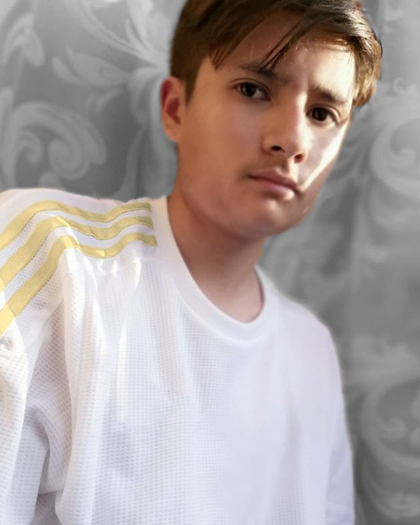

¿Quiénes somos?
Somos una tienda creada por y para verdaderos amantes del fútbol. Aquí no vendemos modas pasajeras, vendemos pasión por el balompié. En Fuchibol para Machos creemos que una buena jersey es como una armadura: se lleva con orgullo, se suda con garra y se presume con honor.
Todas nuestras playeras son pura chinadera fina, sí, hechas en China, pero con calidad bien perrona y a precios que te dejan dinero para el six. ¿Originales? No, pero ni tu compa el que juega en la liga del barrio lo va a notar.
Misión
Ofrecer jerseys chidas, accesibles y con estilo para que cualquier fan del fútbol, sin importar su equipo o nacionalidad, pueda lucir como todo un crack sin vaciar la cartera.
Visión
Convertirnos en la tienda #1 de jerseys para la banda futbolera, expandiendo el orgullo pambolero más allá de las canchas y creando una comunidad de machos (y machas) que viven el fútbol con el corazón.
Futbol en su máxima expresión
Creador de la Página
Esta página fue creada por RODRIGUEZ IBAÑEZ JOSUE, IG: @_josu719
Creador de paginas con HTML bien mamalonas desde 2020 🥵
